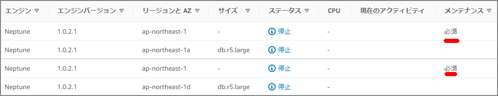
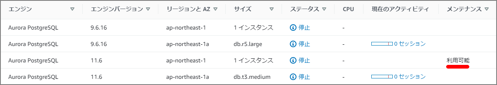

AuroraとNeptuneのメンテナンス（パッチ適用）について
はじめに
RDSのメンテナンスの種類は「Available(利用可能) 」と「Required(必須) 」の種類が存在する。Aurora(PostgreSQL)とNeptuneにそれぞれAvailableとRequiredのパッチがあったので確認してみる。
NeptuneはRDSのと運用周りは同じな模様。（全てが一緒というわけではないと思うが。）
https://docs.aws.amazon.com/ja_jp/neptune/latest/userguide/limits.html
> 特定の管理機能のために、Amazon Neptune は Amazon Relational Database Service (Amazon RDS) と共有の運用テクノロジーを使用します。
Neptune

Aurora

Available(利用可能) とRequired(必須) について
- 必須 – メンテナンスアクションがリソースに適用され、延期はできません。
- 利用可能 – メンテナンスアクションは利用可能ですが、自動的にはリソースに適用されません。手動で適用できます。
DescribePendingMaintenanceActions API
メンテナンスについてはDescribePendingMaintenanceActions APIから確認することが出来る。
[ec2-user@bastin ~]$ aws rds describe-pending-maintenance-actions
{
"PendingMaintenanceActions": [
{
"PendingMaintenanceActionDetails": [
{
"Action": "system-update",
"Description": "Upgrade to Aurora PostgreSQL 3.1.2"
}
],
"ResourceIdentifier": "arn:aws:rds:ap-northeast-1:xxxxxx:cluster:xxxxxxxpostgresv11"
},
{
"PendingMaintenanceActionDetails": [
{
"Action": "system-update",
"CurrentApplyDate": "2020-05-08T18:33:00Z",
"AutoAppliedAfterDate": "2020-05-08T18:33:00Z",
"Description": "Engine Patch Upgrade"
}
],
"ResourceIdentifier": "arn:aws:rds:ap-northeast-1:xxxxxxx:cluster:xxxxxxx-cluster"
}
]
}
CLIの場合はAvailable(利用可能)かRequired(必須) かどうかは項目を見るだけではわからない。Required(必須)の場合はAutoAppliedAfterDate、CurrentApplyDateが出力されるようである。
各項目の説明は以下の通り。
| 項目 | 説明 |
|---|---|
| Action | リソースで使用可能な保留中のメンテナンスアクションのタイプ system-update、db-upgrade、hardware-maintenance、とca-certificate-rotation。 |
| Description | メンテナンスアクションの詳細を説明 |
| AutoAppliedAfterDate | アクションが適用されるメンテナンスウィンドウの日付 |
| CurrentApplyDate | 保留中のメンテナンスアクションがリソースに適用される発効日 |
| ForcedApplyDate | メンテナンスアクションが自動的に適用される日付。（延期不可） |
| OptInStatus | リソースに対して受信されたオプトイン要求のタイプ 明示的にapply-pending-maintenance-actionを実行した場合に出力される。 "next-maintenance”、“immediate”、“undo-opt-in” |
OptInStatusのステータスはapply-pending-maintenance-actionで明示的に指定した場合に出力される。もしくはマネージメントコンソール上の「Upgrade at Next Window(次のウィンドウでアップグレード)」や「Upgrade Now(今すぐアップグレード)」を選択する。
[ec2-user@bastin ~]$ aws rds apply-pending-maintenance-action --resource-identifier arn:aws:rds:ap-northeast-1:xxxxxxxxxxxxxx:cluster:neptestdb-cluster --apply-action system-update --opt-in-type next-maintenance
次の通り、OptInStatusが出力されるようになる
[ec2-user@bastin ~]$ aws rds describe-pending-maintenance-actions --resource-identifier arn:aws:rds:ap-northeast-1:xxxxxxxxxxxxxx:cluster:neptestdb-cluster
{
"PendingMaintenanceActions": [
{
"PendingMaintenanceActionDetails": [
{
"Action": "system-update",
"Description": "Engine Patch Upgrade",
"CurrentApplyDate": "2020-05-03T15:58:00Z",
"AutoAppliedAfterDate": "2020-05-03T15:58:00Z",
"OptInStatus": "next-maintenance"
}
],
"ResourceIdentifier": "arn:aws:rds:ap-northeast-1:xxxxxxx:cluster:xxxxxxx-cluster"
}
]
}
参考：
https://docs.aws.amazon.com/AmazonRDS/latest/APIReference/API_PendingMaintenanceAction.html
https://docs.aws.amazon.com/cli/latest/reference/rds/apply-pending-maintenance-action.html